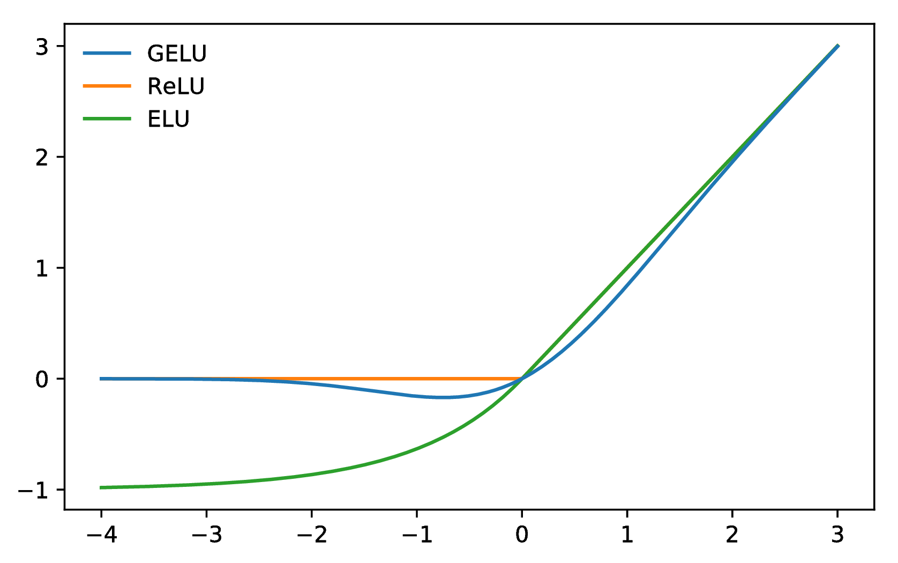
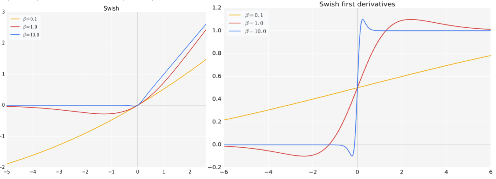

[toc]
1.介绍一下 FFN 块 计算公式？
FFN（Feed-Forward Network）块是Transformer模型中的一个重要组成部分，接受自注意力子层的输出作为输入，并通过一个带有 Relu 激活函数的两层全连接网络对输入进行更加复杂的非线性变换。实验证明，这一非线性变换会对模型最终的性能产生十分 重要的影响。
FFN由两个全连接层（即前馈神经网络）和一个激活函数组成。下面是FFN块的计算公式：
假设输入是一个向量 ，FFN块的计算过程如下：
- 第一层全连接层（线性变换）： 其中，W1 是第一层全连接层的权重矩阵，b1 是偏置向量。
- 激活函数： 其中，g() 是激活函数，常用的激活函数有ReLU（Rectified Linear Unit）等。
- 第二层全连接层（线性变换）： 其中，W2 是第二层全连接层的权重矩阵，b2 是偏置向量。
增大前馈子层隐状态的维度有利于提 升最终翻译结果的质量，因此，前馈子层隐状态的维度一般比自注意力子层要大。
需要注意的是，上述公式中的 W1、b1、W2、b2 是FFN块的可学习参数，它们会通过训练过程进行学习和更新。
2.介绍一下 GeLU 计算公式？
GeLU（Gaussian Error Linear Unit）是一种激活函数，常用于神经网络中的非线性变换。它在Transformer模型中广泛应用于FFN（Feed-Forward Network）块。下面是GeLU的计算公式：
假设输入是一个标量 x，GeLU的计算公式如下：
其中，
tanh() 是双曲正切函数，sqrt() 是平方根函数，是圆周率。import numpy as np def GELU(x): return 0.5 * x * (1 + np.tanh(np.sqrt(2 / np.pi) * (x + 0.044715 * np.power(x, 3))))

相对于 Sigmoid 和 Tanh 激活函数，ReLU 和 GeLU 更为准确和高效，因为它们在神经网络中的梯度消失问题上表现更好。而 ReLU 和 GeLU 几乎没有梯度消失的现象，可以更好地支持深层神经网络的训练和优化。
而 ReLU 和 GeLU 的区别在于形状和计算效率。ReLU 是一个非常简单的函数，仅仅是输入为负数时返回0，而输入为正数时返回自身，从而仅包含了一次分段线性变换。但是，ReLU 函数存在一个问题，就是在输入为负数时，输出恒为0，这个问题可能会导致神经元死亡，从而降低模型的表达能力。GeLU 函数则是一个连续的 S 形曲线，介于 Sigmoid 和 ReLU 之间，形状比 ReLU 更为平滑，可以在一定程度上缓解神经元死亡的问题。不过，由于 GeLU 函数中包含了指数运算等复杂计算，所以在实际应用中通常比 ReLU 慢。
总之，ReLU 和 GeLU 都是常用的激活函数，它们各有优缺点，并适用于不同类型的神经网络和机器学习问题。一般来说，ReLU 更适合使用在卷积神经网络（CNN）中，而 GeLU 更适用于全连接网络（FNN）。
3.介绍一下 Swish 计算公式？
Swish是一种激活函数，它在深度学习中常用于神经网络的非线性变换。Swish函数的计算公式如下：
其中， 是Sigmoid函数， 是输入， 是一个可调节的超参数。

Swish函数的特点是在接近零的区域表现得类似于线性函数，而在远离零的区域则表现出非线性的特性。相比于其他常用的激活函数（如ReLU、tanh等），Swish函数在某些情况下能够提供更好的性能和更快的收敛速度。
Swish函数的设计灵感来自于自动搜索算法，它通过引入一个可调节的超参数来增加非线性程度。当beta为0时，Swish函数退化为线性函数；当beta趋近于无穷大时，Swish函数趋近于ReLU函数。
需要注意的是，Swish函数相对于其他激活函数来说计算开销较大，因为它需要进行Sigmoid运算。因此，在实际应用中，也可以根据具体情况选择其他的激活函数来代替Swish函数。
4.介绍一下 使用 GLU 线性门控单元的 FFN 块 计算公式？
使用GLU（Gated Linear Unit）线性门控单元的FFN（Feed-Forward Network）块是Transformer模型中常用的结构之一。它通过引入门控机制来增强模型的非线性能力。下面是使用GLU线性门控单元的FFN块的计算公式：
假设输入是一个向量 x，GLU线性门控单元的计算公式如下：
其中， 是Sigmoid函数， 是一个可学习的权重矩阵。
在公式中，首先将输入向量 x 通过一个全连接层（线性变换）得到一个与 x 维度相同的向量，然后将该向量通过Sigmoid函数进行激活。这个Sigmoid函数的输出称为门控向量，用来控制输入向量 x 的元素是否被激活。最后，将门控向量与输入向量 x 逐元素相乘，得到最终的输出向量。
GLU线性门控单元的特点是能够对输入向量进行选择性地激活，从而增强模型的表达能力。它在Transformer模型的编码器和解码器中广泛应用，用于对输入向量进行非线性变换和特征提取。
需要注意的是，GLU线性门控单元的计算复杂度较高，可能会增加模型的计算开销。因此，在实际应用中，也可以根据具体情况选择其他的非线性变换方式来代替GLU线性门控单元。
5.介绍一下 使用 GeLU 的 GLU 块 计算公式？
使用GeLU作为激活函数的GLU块的计算公式如下：
其中，
GeLU() 是Gaussian Error Linear Unit的激活函数，W_1 是一个可学习的权重矩阵。在公式中，首先将输入向量 x 通过一个全连接层（线性变换）得到一个与 x 维度相同的向量，然后将该向量作为输入传递给GeLU激活函数进行非线性变换。最后，将GeLU激活函数的输出与输入向量 x 逐元素相乘，得到最终的输出向量。
GeLU激活函数的计算公式如下：
其中，
tanh() 是双曲正切函数，sqrt() 是平方根函数，是圆周率。在公式中，GeLU函数首先对输入向量 x 进行一个非线性变换，然后通过一系列的数学运算得到最终的输出值。
使用GeLU作为GLU块的激活函数可以增强模型的非线性能力，并在某些情况下提供更好的性能和更快的收敛速度。这种结构常用于Transformer模型中的编码器和解码器，用于对输入向量进行非线性变换和特征提取。
需要注意的是，GLU块和GeLU激活函数是两个不同的概念，它们在计算公式和应用场景上有所区别。在实际应用中，可以根据具体情况选择合适的激活函数来代替GeLU或GLU。
6.介绍一下 使用 Swish 的 GLU 块 计算公式？
使用Swish作为激活函数的GLU块的计算公式如下：
其中， 是Sigmoid函数， 是一个可学习的权重矩阵。
在公式中，首先将输入向量 x 通过一个全连接层（线性变换）得到一个与 x 维度相同的向量，然后将该向量通过Sigmoid函数进行激活。这个Sigmoid函数的输出称为门控向量，用来控制输入向量 x 的元素是否被激活。最后，将门控向量与输入向量 x 逐元素相乘，得到最终的输出向量。
Swish激活函数的计算公式如下：
其中， 是Sigmoid函数， 是输入， 是一个可调节的超参数。
在公式中，Swish函数首先对输入向量 x 进行一个非线性变换，然后通过Sigmoid函数进行激活，并将该激活结果与输入向量 x 逐元素相乘，得到最终的输出值。
使用Swish作为GLU块的激活函数可以增强模型的非线性能力，并在某些情况下提供更好的性能和更快的收敛速度。GLU块常用于Transformer模型中的编码器和解码器，用于对输入向量进行非线性变换和特征提取。
需要注意的是，GLU块和Swish激活函数是两个不同的概念，它们在计算公式和应用场景上有所区别。在实际应用中，可以根据具体情况选择合适的激活函数来代替Swish或GLU。